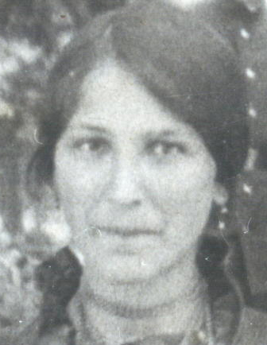
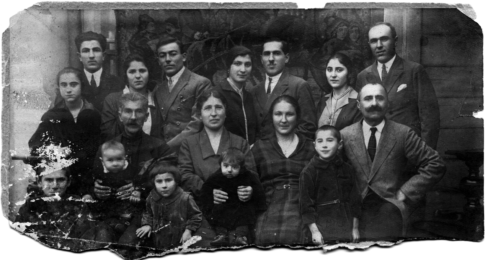

Азнаурьян Вардануш.Род: Азнаурьяны
Продолжительность жизни: 71
Отец: Азнаурьян Петрос Григорьевич
Мать: Азнаурьян (Гурджиян) Искуи Петровна
Брат: Азнаурьян Григорий (Грач) Петросович
Брат: Азнаурьян Пайлак Петросович
Брат: Азнаурьян Арменак Петросович
Сестра: Азнаурьян Анаида Петросовна
Муж: Саатчиян Погос Никитич
Дочь: (Саатчиян) Римма Павловна
Сын: Саатчиян Никита Павлович (Погосович)
Дочь: Костанян (Саатчан) Мария Павловна
Сын: Саатчан Артавазд Павлович
Сын: Саатчан Манук Павлович
Родилась: 1899.
Вышла замуж.
Родился сын: Саатчан Манук Павлович.
Родилась дочь: (Саатчиян) Римма Павловна, 1912.
Родился сын: Саатчиян Никита Павлович (Погосович), 10.04.1918.
Родилась дочь: Костанян (Саатчан) Мария Павловна, 08.1923.
Родился сын: Саатчан Артавазд Павлович, 08.1928.
Умерла: 06.11.1970.
 Семья Азнаурьян: между 1929 и 1930, Артвин. Стоят: Азнаурьян Арменак, супруги Азнаурьян Анаида и Азнаурян Вартан, супруги Азнаурьян Аракси и Азнаурьян Пайлак, супруги Азнаурьян Сирануш и Азнаурьян Григорий (Грач).Во втором ряду стоит Саатчиян Римма. Сидят: Азнаурьян Петрос и Азнаурьян Искуи, Саатчиян Вардануш и Саатчиян Погос. Сидят внизу: Саатчиян Никита, Азнаурьян Яков, Саатчан Мария, Саатчан Артавазд и Саатчан Манук. |